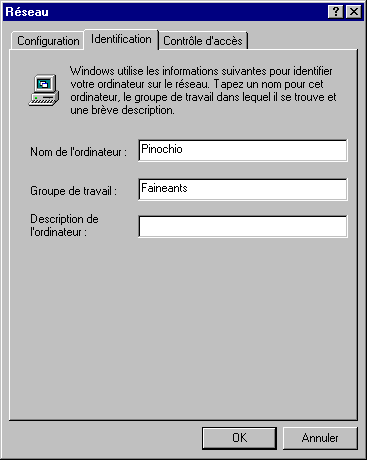
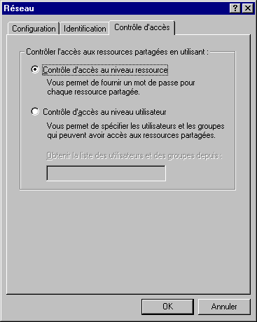

WINDOWS 95 et Internet
Configuration d'une connexion en dial-up IP
Document inspiré de
France-Pratique
4ème étape : Terminer de configurer les composantes "RESEAU"
A partir du bureau de WINDOWS 95, Double-cliquez sur poste de travail.
- Double-cliquez sur icône "Panneau de configuration".
- Double cliquez sur icône "Réseau" : La fenêtre "Réseau" apparaît avec ses 3 onglets.
- Choisissez l'onglet "Identification"
- Dans le champ "Nom de l'ordinateur", saisissez un nom pour votre ordinateur.
- Dans le champ "Groupe de travail", mettre isima.fr comme groupe (La zone "description" est facultative).

- Choisissez maintenant l'onglet "Contrôle d'accès"
- Cliquez sur "Contrôle d'accès au niveau des ressources".

- Cliquez sur le bouton "OK".
- Fermez le paneau de configuration.
© FRANCE PRATIQUE
Sommaire
Etape 3
Etape 5